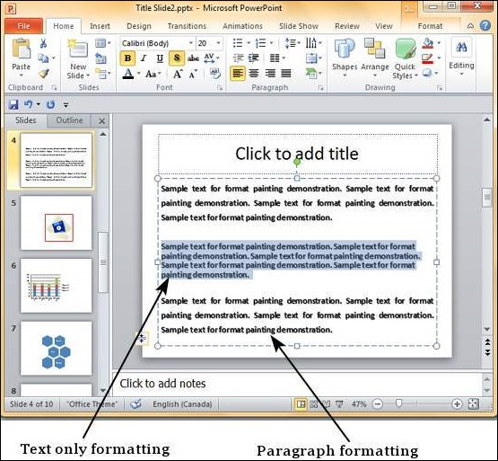

One of the most powerful tools in Microsoft Office is the application of formatting feature. This feature basically lets you define the right format once and apply the same to a series of objects in the rest of the presentation or any other file. While working with large presentations or just working on slides for a long time, if you ever need to make a change in the style and want it applied across multiple content this is the tool to use.
The following are the steps to apply formatting to your presentation −
Step 1 − Select the content you want to copy the formatting from.
Step 2 − Go to the Clipboard group under the Home ribbon.
Step 3 − Click on the Format Painter icon.
Step 4 − Select the content you want to format.
Here are some key aspects about the Format Painter −
If you click on the Format Painter icon just once, the formatting will be copied just once.
If you click on the Format Painter icon twice quickly, you can copy the formatting multiple times.
If you want to copy just the text formatting and not the paragraph features, ensure that you select just the sample text and not the entire paragraph.
If you want to copy paragraph and font formatting, you must select the entire paragraph.
